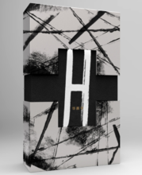

|
首页 | 关于花花 | 精选音乐 | 精彩视频 | 个人写真 | 火星论坛 | 联系我们 | 注册会员 |
-
基本信息
| 中文名 | 华晨宇 | 代表作品 | |
| 别名 | 花花 | ||
| 国籍 | 中华人民共和国 | 主要成就 | 2015QQ音乐年度盛典暨巅峰榜颁奖典礼年度最佳内地男歌手 第十五届音乐风云榜年度盛典年度最受欢迎男歌手 2013快乐男声全国总冠军 2016MAMA亚洲最佳艺人（中国区） 2015福布斯中国名人榜综合排名91 第21届东方风云榜最佳新锐歌手 第六届音乐风云榜新人盛典最受欢迎男歌手 2015新浪微博之夜年度最受欢迎男歌手 第23届东方风云榜年度概念专辑 2016酷亚洲音乐盛典年度内地最佳专辑 2013湖北音乐年度人物 2015微博之夜年度最受欢迎男歌手 |
| 名族 | 汉族 | ||
| 星座 | 水瓶座 | ||
| 血型 | B型 | ||
| 身高 | 172cm | ||
| 出生地 | 湖北十堰 | ||
| 出生日期 | 1990年2月7日 | ||
| 职业 | 歌手 | ||
| 毕业院校 | 武汉音乐学院（2010级） | ||
| 经纪公司 | 天娱传媒 |
-
早年经历
1990年2月7日，华晨宇出生于湖北十堰。他从小就开始接触音乐。小学五年级之前，长笛是华晨宇的最爱。随着年龄增长，他不再满足于长笛带给他的音乐世界，与父亲交流并获得支持后，华晨宇开始学钢琴，虽然过程并不是一帆风顺，但凭着自身的努力，他很快达到了钢琴十级。
初中毕业时，华晨宇已经对自己的未来有了规划，他想学更多的音乐知识，想去武汉上高中。2009年，华晨宇参加了高考。一心想上武汉音乐学院的他，专业课满分，却因为文化课的一分之差与心仪的高等学府失之交臂。但他坚持复读也一定要考上武汉音乐学院。第二年即以文化课高出20多分，专业课优秀的成绩，顺利进入武汉音乐学院学习音乐。
-
演艺经历
2013年6月29日，快乐男声长沙唱区十强决选现场，华晨宇凭借原创的《无字歌》全票晋级长沙唱区10强，也因此被称为火星弟弟。9月27日，华晨宇以1606的总分夺得2013快乐男声全国总冠军 ，签约天娱传媒。同年9月，首支个人单曲《我和我》曝光，收录于2013快男合辑《追梦敢不敢》2013年11月2日-2014年3月15日，2013快乐男声全国巡回演唱会先后在北京、上海、杭州等11大城市举办。2013年11月16日-2014年1月18日，代表湖南卫视参加2013直通春晚，并成为首位获得2014央视马年春晚邀请函的选手。
2014年1月30日，首登央视春晚舞台并献唱《在那遥远的地方》。1月31日，在2014北京卫视春晚演唱《We are young》。4月，加盟湖南卫视明星户外旅行真人秀节目《花儿与少年》 ，节目首播收视率即夺得同时段冠军 。6月28日，华晨宇2014火星演唱会开票，1分32秒售罄，多方协商后决定加场 。6月，为世界级男性杂志《智族GQ》七月号拍片并接受专访 [2月6日至7日，华晨宇2014火星演唱会在北京万事达中心连开两场 。9月6日，QQ音乐与芒果TV同步直播火星演唱会，开创明星演唱会O2O多屏直播互动模式新纪元，创多个行业新纪录。9月19日，华晨宇首专《卡西莫多的礼物》内地及海外版同步发行。专辑曲风多样，以第一人称我来叙述，讲述我对于自己、对于世界的感受。专辑内地版登京东年度音乐销量榜第一，海外版发行后在台湾五大唱片榜蝉联冠军。11月24日，《HI歌》第四期播出，华晨宇演绎的《春》广受好评并最终成为年度Hi歌。
2015年1月1日，加盟辽宁卫视新年欢唱会并献唱。2月8日（洛杉矶当地时间），受Billboard邀请作为VIP观礼嘉宾出席第57届格莱美颁奖典礼。2月17日，参加辽宁卫视春晚。4月27日，原创的人声实验作品《癌》全网上线 。5月11日，2015福布斯中国名人榜公布，华晨宇首次上榜，综合排名91。 5月23日，火星演唱会8月1日场在大麦正式开票，当天在线人数达16万人，仅35秒即抢空，创线上售票新纪录，后追加两场 。7月31日—8月2日，2QQ影音015火星演唱会在上海大舞台连开三场，成为内地新声代第一人。8月1日，演唱会在腾讯视频和芒果TV线上直播，腾讯视频预约人数超20万，直播在线观看人数达264万，再创线上直播新纪录。9月27日，受邀参加央视中秋晚会。10月28日，第二张专辑《异类》实体专辑在京东开启限量预售，上架仅一天，夺下销量日榜，周榜，月榜冠军。11月7日，首张数字专辑预售上线8分钟突破10万销量记录。11月13日，国内首档音乐游学类真人秀《唱游天下》开播。12月18日，《异类》在海外各大数字音乐平台上线。12月22日，《异类》海外版正式上架。12月31日，加盟湖南卫视跨年晚会。

2016年1月7日，出席2015新浪微博之夜，斩获年度最受欢迎男歌手及2015 亚洲新歌榜冠军王两项大奖 。1月8日，加盟《郎朗的天空》新春国际音乐盛典，并于2月1日在辽宁卫视播出。2月8日，在北京春晚献唱《写给未来的孩子》。3月4日，在《王牌对王牌》第六期改编的《菠萝菠萝蜜》广受好评。3月7日，为电影《睡在我上铺的兄弟》献唱的插曲《横冲直撞》发布。4月7日，为《火星情报局》献唱同名主题曲。4月9日，作为代言人出席第十六届音乐风云榜，获年度最佳专辑演唱和年度最佳偶像两项大奖 。5月8日，出席北京大学生电影节，首唱《横冲直撞》。7月1日，加盟《奔跑吧兄弟》第四季最后一期。7月2日，2016火星演唱会开启，北京站在乐视体育生态中心举办，成为内地新声代首位开四面台的歌手。8月21日上海站，9月16日深圳站，在乐视视频开启同步直播，总观看人数突破430万 。7月8日，为电影《使徒行者》献唱主题曲《Here We Are》。9月27日，出席亚洲新歌榜2016年度盛典，揽获最佳男歌手奖。10月16日，东方卫视《天籁之战》首播，华晨宇作为明星导师接受素人挑战，在节目中改编的《我的滑板鞋2016》被收录到第三张专辑。12月2日，获2016MAMA亚洲最佳艺人（中国区）奖 。12月18日，获网易有态度人物盛典年度最有态度燃爆唱将。12月21日，出席2016优酷盛典，揽获年度突破艺人和微博加油榜·年轻的选择两项大奖。
2017年1月1日，献唱2016国剧盛典。3月14日，三专《H》京东限量发行。3月23日，六神公布华晨宇成为品牌形象代言人。4月17日，为《花儿与少年第三季》创作的主题曲《寻》正式发布 。5月1日，加盟上海草莓音乐节。6月2日，电影《悟空传》主题曲《齐天》曝光，由华晨宇创作并演唱。6月3日，再次参加户外旅行真人秀节目《旅途的花样》。6月10日，华晨宇担任导师的《明日之子》在腾讯视频开播。7月8日，作为代言人出席珠江纯生“生·非凡”生啤酒派对。7月13日，雅诗兰黛确认华晨宇为其品牌大使 。9月27日，为王者荣耀创作鲁班七号角色主题曲《智商二五零》 。10月13日-14日，2017火星演唱会在北京五棵松体育馆连开两场。10月15日，《天籁之战》第二季开播。11月25日，接受素人挑战将游戏BGM改编为《代号魂斗罗》。